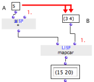
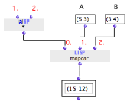

OpenMusic DocumentationHiérarchie de section : OM 6.6 User Manual > Visual Programming II > Higher-Order Functions > Mapcar - Iterations
OpenMusic DocumentationHiérarchie de section : OM 6.6 User Manual > Visual Programming II > Higher-Order Functions > Mapcar - Iterations
Navigation : page précédente | page suivante
Attention, votre navigateur ne supporte pas le javascript ou celui-ci à été désactivé. Certaines fonctionnalités de ce guide sont restreintes.
Lambda Mode Examples: Mapcar - Iterations
Mapcar is a very useful Lisp function, which can apply a function to the items of one or more lists successively. The function is assigned is the first argument of mapcar. The lists are assigned as other argument(s).
Usign Mapcar for Iterations
Mapcar constitutes a simple an elegant way to implement iterative processes.
An Other Way of Doing Iterations in OM :
Applying a Function to a List with Mapcar
The first input of the mapcar box must be a lambda function – or a box in "lambda" mode. The other argument is a list to operate. Here, the box * has
Therefore, (A) represents the "f(x) = x * 5" function. Mapcar goes through the list (B) and applies (A) to each of its items successively. Results are collected and returned as a list : ((3 * 5) (4 * 5)) = (15 20) |

|
Multiple Lists Processing
Mapcar accepts a variable number of lists to operate, and can process them simultaneously. Items are matched and processed by the lambda function successively.

|
Here, the* function box has two free inputs. It represents the function " f(x,y) = x * y ". The * function is connected to input #0. It is applied successively to the first elements of inputs #1 and #2, then to the second elements of inputs #1 and 2, then to the third elements, and so on. A list is built a out of the successive results. |
Free Inputs and Lists Size
The number of free inputs of the lambda box must be equal to the number of additional arguments of the mapcar function.
Mapcar can only process lists with the same number of items.
General Issues with Lambda Functions
Références :
Plan :
Navigation : page précédente | page suivante
A propos...(c) Ircam - Centre Pompidou